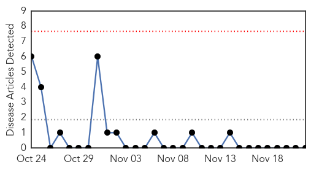
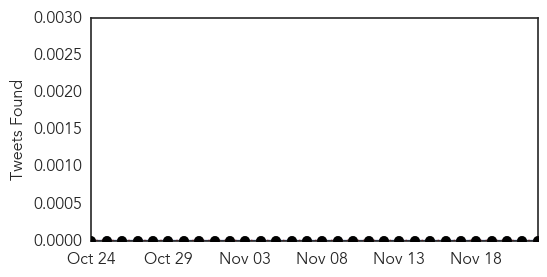
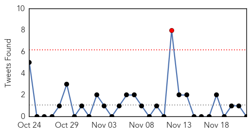

West Nile Virus
30-Day Web Trend
0 alerts, 0 warnings

30-Day Twitter Trend
0 alerts, 0 warnings

Article Locations


Article Confidences

Top Articles:
-
No articles found for Nov 22, 2014
Top Tweets:
-
No tweets found for Nov 22, 2014
Unknown
30-Day Web Trend
30-Day Twitter Trend
1 alerts, 0 warnings

Article Locations

Article Confidences
Top Articles:
- 0.996
- Madagascar plague outbreak kills 40 since August
- 0.994
- Plague outbreak kills 40 people in Madagascar - National
- 0.992
- 40 killed in Madagascar plague outbreak
- 0.985
- Burden of typhoid fever in low-income and middle-income countries: a systematic, literature-based update with risk-factor adjustment
- 0.984
- Madagascar plague outbreak kills 40
- 0.982
- WHO: Plague outbreak kills 40 in Madagascar
- 0.978
- UPDATE 1-Plague in Madagascar has killed 40 people out of 119 cases -WHO
- 0.976
- 2 paralysis cases linked to enterovirus seen in North Texas
- 0.971
- Portugal Legionnaires' outbreak kills 10, no new infections seen
- 0.967
- Forget About Sneezes, Here Are 4 Common Social Interactions That Result In Germy Exchange
- 0.959
- WHO: Madagascar hit by plague outbreak, 40 dead
- 0.957
- 40 people dead of bubonic plague in Madagascar
- 0.954
- Quarantine order issued to stop movement of Oahu pigs
- 0.951
- Plague in Madagascar, Plague outbreak in Madagascar
- 0.944
- Plague outbreak kills 40 in Madagascar
- 0.937
- Plague outbreak kills 40 in Madagascar
- 0.920
- Oklahoma school district closed due to increased mononucleosis in community
- 0.917
- Chicago Tribune
- 0.917
- Chicago Tribune
- 0.917
- Chicago Tribune
- 0.917
- Chicago Tribune
- 0.917
- Chicago Tribune
- 0.917
- Chicago Tribune
- 0.908
- Plague kills 40 in Madagascar
- 0.864
- Mononucleosis outbreak closes Oklahoma school district
- 0.811
- Germany reports second case of bird flu - H5N8 found in wild bird
- 0.807
- Germany reports second case of bird flu
- 0.794
- Latest news on sustainable development, features, opinions, interviews with NGO leaders and multimedia from India and South Asia
- 0.784
- Salmonella Outbreak Affecting 10 States
- 0.773
- Ongoing Multistate Salmonella Outbreak Linked to Sprouts
- 0.749
- WHO says Ebola outbreak 'stable' in Guinea
- 0.738
- HPV vaccination recommended for those at risk
- 0.716
- Publisher's Platform: One, Two, Three Sprouts, You’re Out
- 0.660
- Health Hub: Watch out for shortness of breath
- 0.624
- LNP to introduce Wait Time Guarantee for elective patients
- 0.624
- LNP to introduce Wait Time Guarantee for elective patients
- 0.618
- New bird flu case in Germany
- 0.584
- New bird flu case in Germany, news, Health News, AsiaOne YourHealth
- 0.560
- More than half TB cases undetected
- 0.549
- Be a Proactive Patient: Protect Yourself from DVT
- 0.524
- More doctors posted in all neonatal care centres
- 0.505
- TV chef Ross Burden killed by hospital bug
- 0.502
- HPV legislation doesn't increase vaccination among adolescents
Top Tweets:
-
No tweets found for Nov 22, 2014